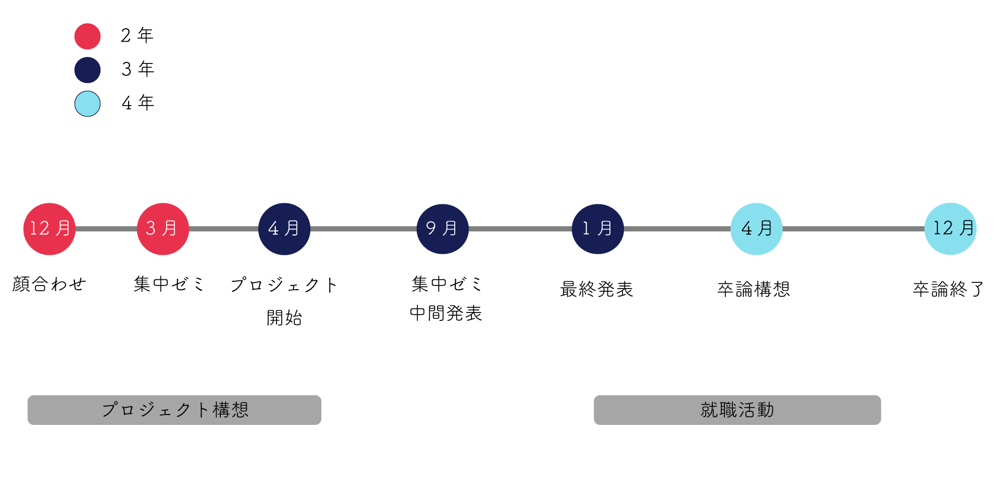

14期生:ガイダンス
ルール
創造的であること
方針
皆さんがやりたいことを邪魔しません。やりたいことをやるようにしてください。
ただし、定期的に道用とコミュニケーションをとってください。
やりたいことがわからない人はグループプロジェクトに真剣に取り組んでみましょう。
※プロジェクトは複数掛け持ちしても構いません。
Schedule

お願い
できれば、「先生」でなく「さん」でお願いします。
Communication Tool
グループプロジェクト案
評価方法
自分のやったことはHPにまとめてください。
HPと普段の取り組みで評価。
HPは自分のプロジェクトの内容が魅力的に伝わるようにまとめてください。
HPはこまめにまとめることをお勧めします。
1回目のゼミまでの宿題
- 自分が取り組むプロジェクトを考えておく
(直前にちょろっと決めた人は大体無駄な２年間を過ごしている)
- Toolsを揃えておく
-
■XBPの人
mygitにdoyolabというフォルダを作ってゼミ用のHPを作っておいてください。作り方を忘れた人はここを参考に
■XBP以外の人
Googleサイトで自分のwebページを作ってそのURLをslackで3月中に連絡してください。
参考：はじめてのGoogleサイト（外部サイト：どこがくYoutbe）
- 本や動画をみて気分をあげておく
例）
クリエイティブ・マインドセット(書籍)
世界を変えるデザイン（書籍）
ジェームス・ダイソン(動画)（英語ですが、設定で日本語字幕にできます）
Most Likely Succeeed(動画)学び方
- 旅をしたり、普段行かないところに出歩いて世界を広げておく
Tools
アイディアは素早くスケッチして視覚化していく習慣をつけていきます。（
例1、
例2、
例3）
これから常に持ち歩くもの
ノートPCに加えて、下記のものは常に持ち歩きましょう。おすすめのものでない、安いものでも構いません。